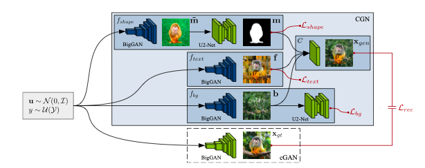

Counterfactual Generative Networks
Last modified on April 28, 2022
Neural networks like to “cheat” by using simple correlations that fail to generalize. E.g., image classifiers can learn spurious correlations with texture in the background, rather than the actual object’s shape; a classifier might learn that “green grass background” => “cow classification.”
This work decomposes the image generation process into three independent causal mechanisms – shape, texture, and background. Thus, one can generate “counterfactual images” to improve OOD robustness, e.g. by placing a cow on a swimming pool background. Related: generative models counterfactuals
Problem setting:
We have images \(\mathbf{x}\), and labels \(y\). In generative modeling, it’s common to assume that each \(\mathbf{x}\) can be described by some lower-dimensional latent space \(\mathbf{z}\) (e.g. color, shape, etc.) We’d like this latent representation to be disentangled into several separate, semenatically meaningful factors, so we can control the influence of each on the classifier’s decision. Usually in disentangled modeling, these factors are assumed to be statistically independent– however, in practice this is a poor assumption. One rather contrived example is found in the colored MNIST dataset:

We might want to disentangle digit shape from color; however, in the train fold, all examples of the same digit are also the same color. (In the test fold, the colors are randomized.) Given this dataset, a “dumb” neural net might learn to do the simplest thing, which is to count how many pixels are a certain color; if a digit is red, it assumes it must be a 0, if it’s green, a 1, and so on, completely ignoring the digit’s shape.
Structural Causal Models
An SCM \(\mathfrak{C}\) is defined is a collection of \(d\) structural assignments
\(S_{j}:=f_{j}\left(\mathbf{P A}_{j}, U_{j}\right), \quad j=1, \ldots, d\)
where each random variable \(S_{j}\) is a function of its parents \(\mathbf{P A}_{j} \subseteq\left\{S_{1}, \ldots, S_{d}\right\} \backslash\left\{S_{j}\right\}\) and a noise variable \(U_{j}\). The noise variables \(U_{1}, \ldots, U_{d}\) are jointly independent. The functions \(f_{i}\) are
Architecture
